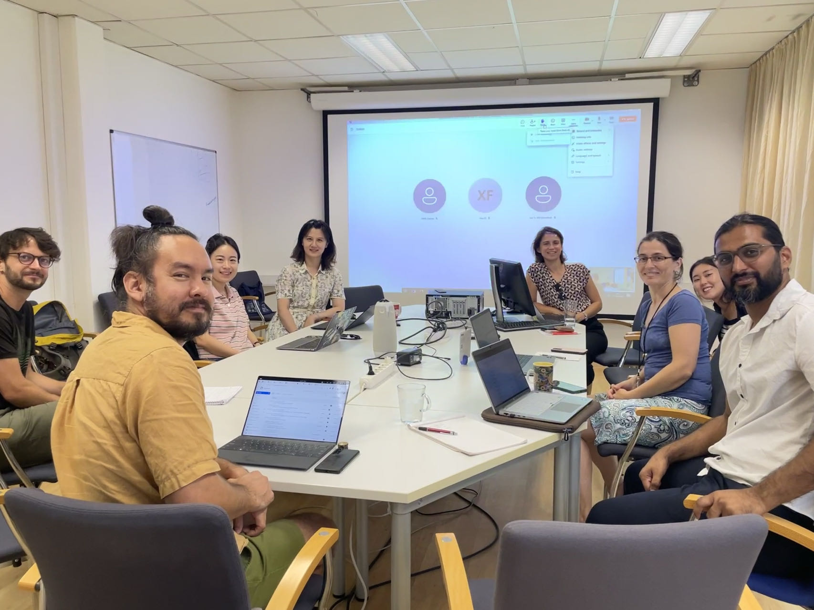

Visiting IIASA for the discussion of decarbonized traveling behavior
Funded by the international collaboration project of NSFC
The NSFC-funded international collaboration project, led by Dr. Xiao Fu (associate professor at Southeast University), is almost approaching the end. As a co-investigator, I was invited to visit our collaborator, The International Institute for Applied Systems Analysis (IIASA), to discuss about our most recent research outputs of the project.
From the governmental perspective, strategies and pathways have been proposed for the transport decarbonization. However, it is the residents who take the sustainable behavior of traveling, shopping, household, etc. Therefore, this project aims to explore the behavior characteristics and lifestyle of urban residents facing the decarbonization goal, and my work focuses on the analysis of attitudinal and preference towards emerging techs, such as electric vehicles, on-road driving guidance, carbon incentives, and Mobility-as-a-Service.
The work presented includes three parts: 1) drivers charging choice when driving on highways and its impact factors; 2) travelers' attitudes and concerns regarding traveling carbon incentives and the possibility to integrate the design inth MaaS; and 3) drivers' response towards on-road eco-driving guidance. Interesting to note, while it was tricky to present MaaS after the bankrupcy of MaaS companies, we both agree that the failure does not lay on its conception; instead, the business model is problematic. Maybe a public sector-led MaaS program, which involves the participation of private sectors through administrative benefits like licensing and subsidies, can formulate a better performance of the system.